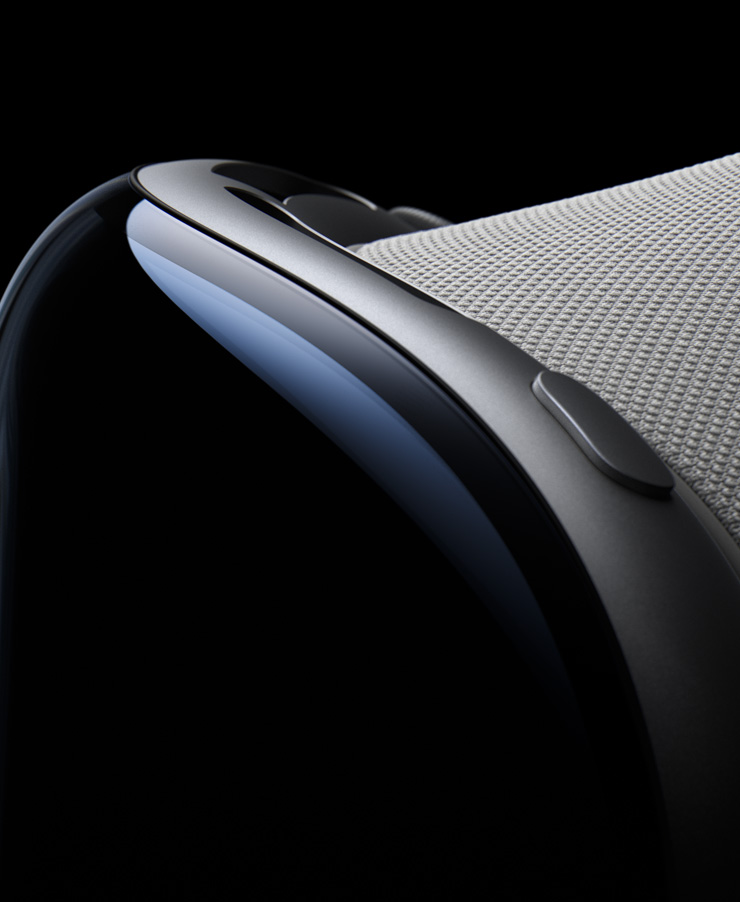
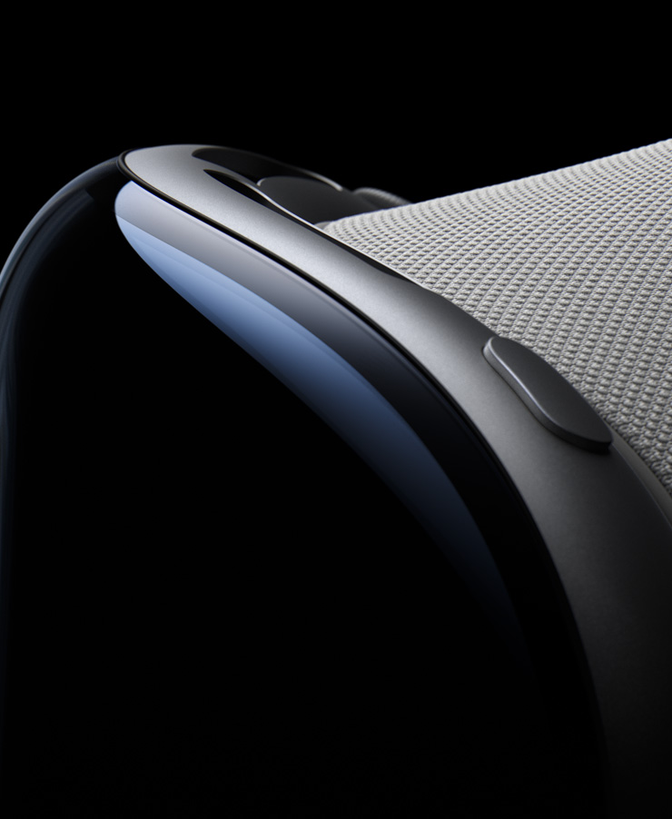

¿Qué es?
Son unas gafas de realidad mixta desarrolladas por Apple que combinan la realidad virtual y la
realidad aumentada. La realidad virtual permite a los usuarios experimentar mundos completamente nuevos,
mientras que la realidad aumentada superpone elementos virtuales al mundo real.
Esta combinación de
hardware y software se basa en tres métodos de interacción: seguimiento en tiempo real del movimiento de
los ojos, detección de los movimientos de las manos y la interacción mediante voz
(Siri).
Tienen el potencial de revolucionar la forma en que interactuamos con la tecnología y el
entorno. A medida que la tecnología de la realidad mixta siga desarrollándose, las Apple Vision Pro podrían
convertirse en una parte esencial de nuestra vida cotidiana.
 

¿Para qué sirve?
La experiencia mixta del mundo real y digital al mismo tiempo permite que puedan ser utilizadas para
productividad, entretenimiento, ocio o educación.
En el caso de la educación, pueden crear
experiencias de aprendizaje más atractivas en las que el estudiante interactúe con conceptos en un entorno
virtual. En el trabajo, los usuarios pueden colaborar con otros de forma remota o realizar tareas
inmersivas. En cuanto al entretenimiento, ofrecen una experiencia envolvente que hace sentir que formas
parte de la acción de un videojuego o una película.
¿Qué beneficios aporta?
Las gafas permiten la interacción natural con el mundo digital utilizando gestos y comandos de voz, lo que
las convierte en un dispositivo usable ya que permite a los usuarios no tener que aprender nuevas
habilidades. Además, la detección de los movimientos de las manos es un método de interacción que ofrece
gran precisión y control.
Los principales beneficios son: la inmersividad que hace posible
recrear experiencias que facilitan la comprensión, la productividad al poder realizar tareas de
trabajo de forma eficiente y colaborativa, y la accesibilidad que permite ayudar a personas con
discapacidad a interactuar con el mundo.
Características
|
9,2" |
|||||
|---|---|---|---|---|---|
| USB-C Bluetooth 5.0 Wi-Fi 6 |
Chip de 5 nm CPU de 10 núcleos GPU de 16 núcleos Neural Engine de 16 núcleos |
Hasta 2 horas de duración | Audio espacial | Pantallas micro-OLED Resolución de 4096 x 5464 px |
RealityOS |
| Pantalla |
|---|
| Micro-OLED 4096 x 5464 píxeles por ojo 9,2 pulgadas Tasa de refresco de 120 Hz Soporte para HDR y WCG |
| Peso y dimensiones | |||
|---|---|---|---|
| Peso 380 g |
Alto 147 mm |
Ancho 47 mm |
Grosor 109 mm |
| Chip |
|---|
| Apple M2 Chip de 5 nm CPU de 10 núcleos GPU de 16 núcleos Neural Engine de 16 núcleos |
| Sensores |
|---|
| Escáner LiDAR Sensores de proximidad Sensor de luz ambiental |